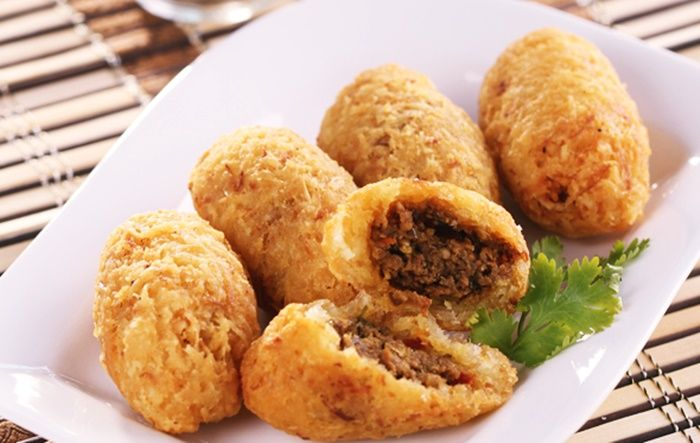
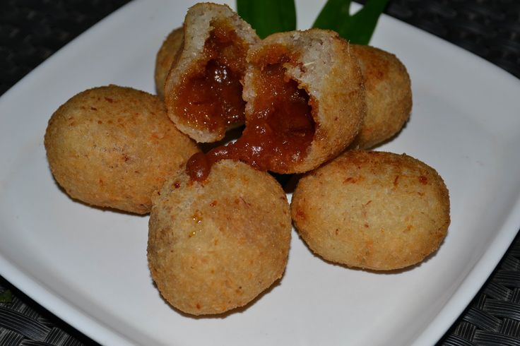

Makanan Khas Bogor

Asinan Bogor
Jajanan segar dengan rasa asam, manis, dan pedas.
Lokasi: Jl. Siliwangi / Jl. Suryakencana
Harga: Rp15.000–Rp35.000

Toge Goreng
Disajikan dengan tauco khas yang gurih.
Lokasi: Jl. Pengadilan, Bogor Tengah
Harga: Rp15.000–Rp25.000

Doclang
Lontong dengan saus kacang khas.
Lokasi: Jl. Pasir Kuda, Bogor Barat
Harga: Rp15.000–Rp25.000

Soto Mie Bogor
Soto mie khas Bogor dengan kuah kaldu gurih, daging sapi, risol, mie kuning, bihun, dan taburan seledri yang kaya rasa.
Lokasi: Jl. Suryakencana, Bogor Tengah (Soto Mie Agih)
Harga: Rp25.000–Rp35.000

Cungkring
Kuliner berupa potongan kikil dan bagian kepala sapi (seperti cungur atau bibir) yang dimasak empuk, disajikan bersama irisan lontong dan rempeyek atau keripik tempe, lalu disiram saus kacang yang gurih serta kecap manis.
Lokasi: Jl. Suryakencana, Bogor Tengah
Harga: Rp20.000–Rp35.000

Combro
Gorengan tradisional khas Sunda, Jawa Barat, yang terbuat dari parutan singkong dengan isian sambal oncom gurih dan pedas.
Lokasi: Bogor dan sekitarnya
Harga: Rp3.000–Rp8.000

Misro
Gorengan tradisional khas Sunda, Jawa Barat, yang terbuat dari parutan singkong dengan isian Gula Merah Manis Rasanya.
Lokasi: Bogor dan sekitarnya
Harga: Rp3.000–Rp8.000

Laksa Gang Aut
Laksa khas Bogor berkuah santan kuning dengan mie, tauge, oncom, telur rebus, dan daun kemangi yang harum.
Lokasi: Gang Aut, Bogor Tengah
Harga: Rp20.000–Rp35.000

Mie Glosor
Mie kuning khas Bogor dengan tekstur kenyal, biasanya disajikan dengan sambal, gorengan, atau lauk sederhana.
Lokasi: Pasar Anyar Bogor
Harga: Rp10.000–Rp20.000

Soto Kuning Bogor
Soto khas Bogor dengan kuah kuning berbumbu rempah, berisi daging sapi, babat, paru, atau kikil sesuai pilihan.
Lokasi: Jl. Suryakencana, Bogor Tengah
Harga: Rp30.000–Rp50.000
Bapatong
Bakso khas Bogor yang dipadukan dengan potongan ketupat dalam kuah kaldu gurih.
Lokasi: Bogor Tengah
Harga: Rp20.000–Rp35.000
Sate Sumsum Pak Oo
Sate berbahan sumsum sapi dengan tekstur lembut dan cita rasa gurih yang unik.
Lokasi: Jl. Siliwangi, Bogor Timur
Harga: Rp35.000–Rp60.000
Makaroni Panggang
Pasta panggang dengan saus keju dan daging cincang yang menjadi salah satu kuliner legendaris Bogor.
Lokasi: Jl. Salak, Bogor Tengah
Harga: Rp35.000–Rp65.000
Bihun Goreng Gang Selot
Bihun goreng legendaris dengan cita rasa gurih yang telah menjadi favorit warga Bogor selama puluhan tahun.
Lokasi: Gang Selot, Bogor Tengah
Harga: Rp20.000–Rp35.000